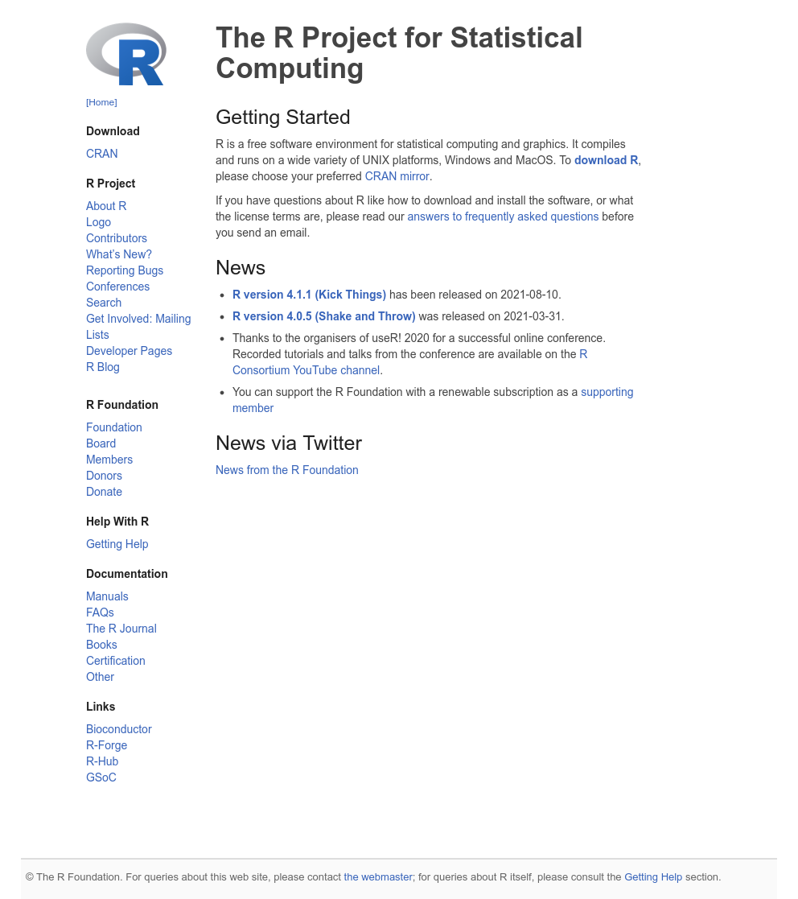
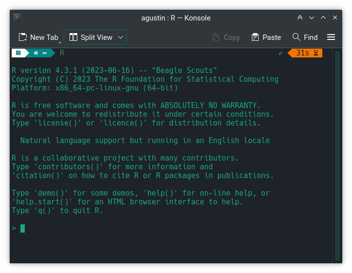
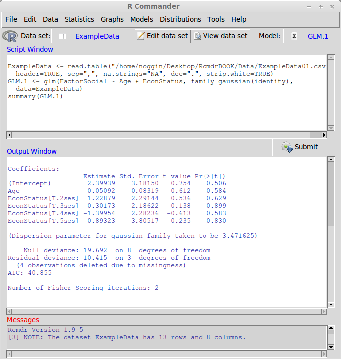
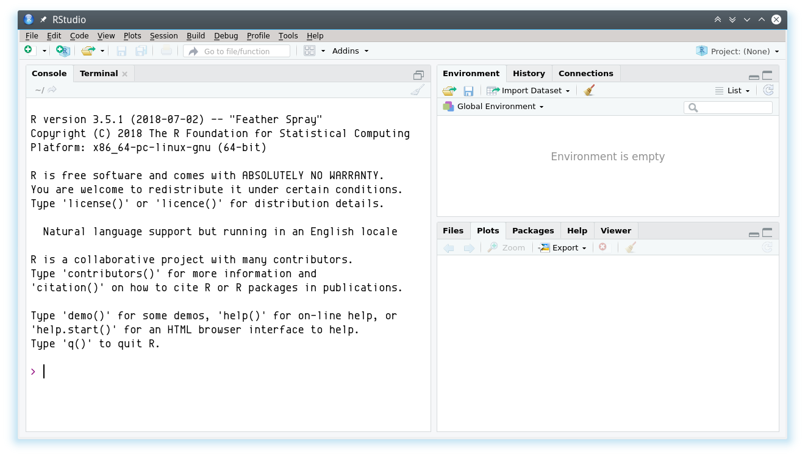
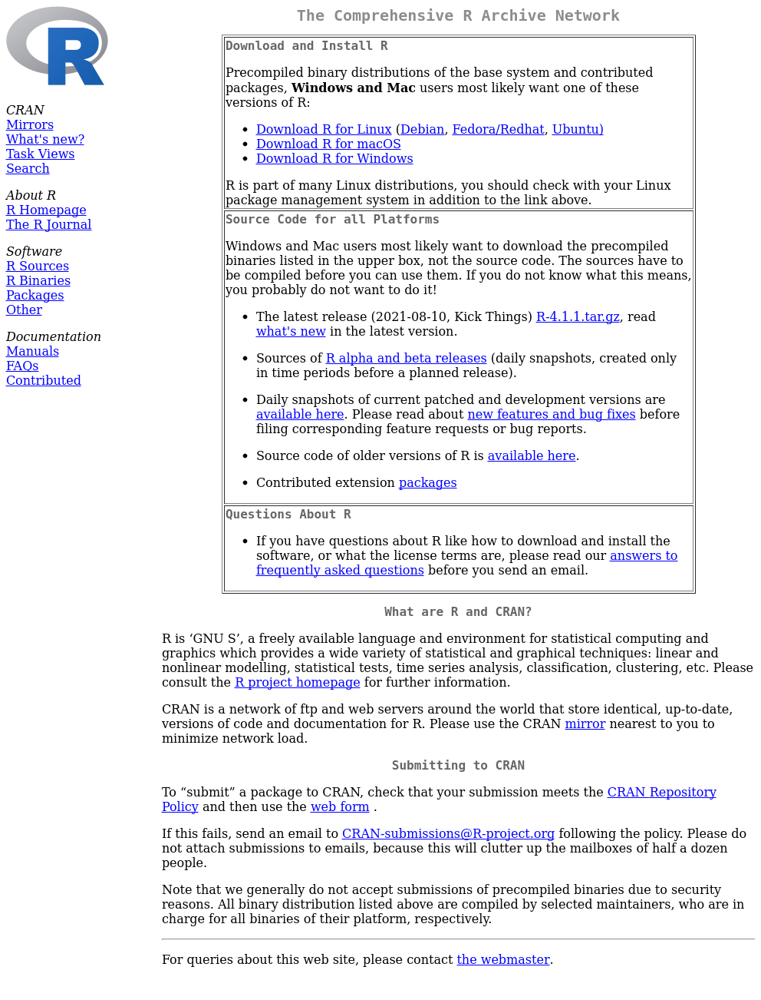
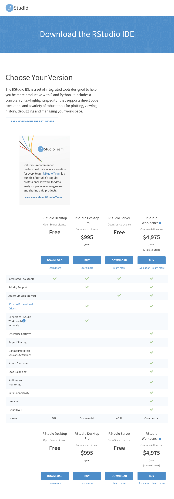
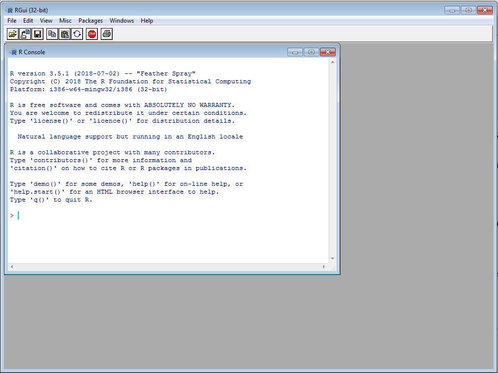
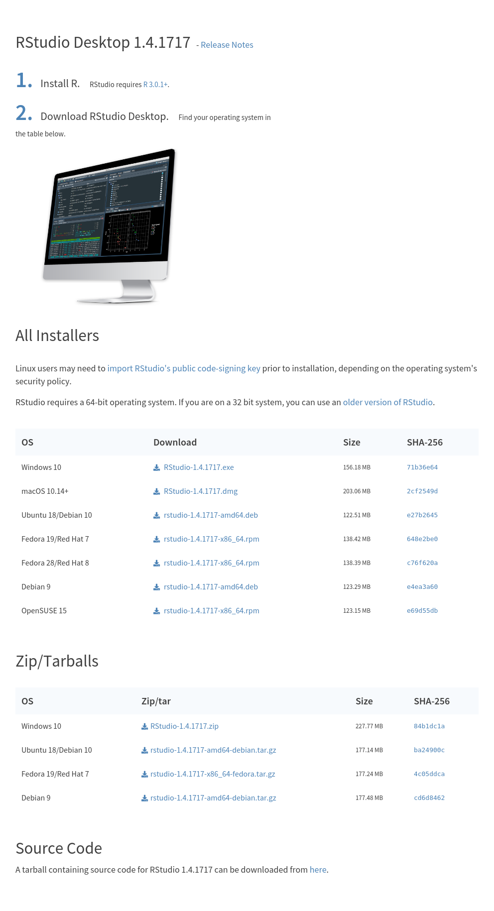
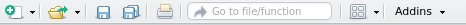
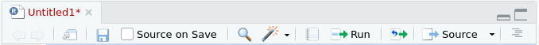

1 Comenzando con R
En esta unidad vamos a ver que es, como instalar y usa R y RStudio. Aprenderemos nociones básicas de la sintaxis de R, tipos de datos y estructuras, manejo de librerías o paquetes, y comenzaremos con nuestro poryecto de análisis de datos reproducible.
1.1 ¿Qué es R y RStudio?
R es un lenguaje y entorno para el procesamiento, visualización y análisis estadístico de datos. Fue creado en 1993 por R. Gentleman y R. Ihaka, ambos científicos del Departamento de Estadística de la Universidad de Auckland (Nueva Zelanda). Actualmente su desarrollo y mantenimiento está a cargo del R Core Team (2023). El sitio oficial del proyecto es www.r-project.org.
Hoy en día, R es la lingua franca del procesamiento y análisis de datos, tanto en el ámbito académico como comercial dado que es gratiuto, multiplataforma, de código abierto (open source, liberado con licencia GNU/GPL). Esto y el ecosistema de paquetes contribuidos por la comunidad de usuarios lo convierte en un software muy potente ya que expresa el estado del arte de los métodos estadísticos.
La flexibilidad y potencia de R se basa en su interfaz de comandos (CLI, del inglés command line interface ) que permite la ejecución de comandos de manera interactiva (en consola) o estructurada mediante scripts.

Existen algunos desarrollos de interfases gráficas (GUIs, del inglés graphical user interface), e.g. RCommander, Deducer, etc., que ofrecen la posibilidad de, mediante menúes y botones dedicados, ejecutar algunos análisis relativamente simples minimizando la necesidad de escribir código.

Los entornos de desarrollo integrados (IDE por sus siglas en inglés integrated development environments) ofrecen un enfoque intermedio: los menúes o funciones asistentes facilitan algunas tareas generales (abrir archivos, carga de datos, exportar gráficos y resultados, etc.) pero dejan la escritura del código y ejecución del análisis estadístico en manos del usuario. Entre estas alternativas se destaca RStudio desarrollado por la empresa posit el cual también es de código abierto (licencia GNU/GPL), multiplataforma y ofrece una versión gratuita.

1.2 ¿Cómo instalar R y RStudio?
R y RStudio se instalan por separado. Ambos softwares son multiplataforma y pueden ser ejecutados en sistemas operativos Windows, Mac OS X y Linux.
R puede funcionar sin RStudio, en cambio RStudio necesita que al menos una versión de R esté instalada en el sistema.
La página de descarga de Rstudio https://posit.co/download/rstudio-desktop/ ofrece un excelente punto de partida para instalar ambos programas.


A continuación se describe el procedimiento para instalar R y RStudio bajo Windows.
1.2.1 Instalación de R
- Descargar el archivo instalador correspondiente a la última versión estable de R desde el CRAN1 (del inglés, Comprenhensive R Archive Network) visitando el siguiente link.
- Ejecutar el archivo descargado 2 y seguir el asistente de instalación con todas las opciones por defecto.
- Si la instalación ha sido exitosa en el menú Inicio podrá encontrarse la carpeta R que contendrá dos accesos directos a la interfase de usuario mínima que viene con la versión de R para Windows.

1.2.2 Instalación de RStudio
Descargar el archivo de instalación correspondiente a nuestra plataforma o sistema operativo. Al momento de escribir estas instrucciones la última versión estable de RStudio era
RStudio-2023.09.0-463.exeque se encuentra en este linkEn el caso que haya una nueva versión, ir al sitio web de descarga de RStudio https://posit.co/download/rstudio-desktop/

Ejecutar el archivo
.exey seguir el asistente de instalación con todas las opciones por defecto.Si la instalación ha sido exitosa en el menú Inicio dentro de la carpeta RStudio se encontrará el acceso directo a RStudio el cual, mediante el menu contextual (botón derecho del ratón) puede enviarse al Escritorio como acceso directo o bien anclar al menu de Inicio o barra de acceso rápido.
Ahora sí, ya tenemos listo R y RStudio para empezar a trabajar!!
1.3 Primera sesión
El entorno de trabajo de RStudio se divide en cuatro paneles. La disposición y contenido de los 4 paneles se puede personalizar yendo a View > Panes > Panes Layout.... A continuación la descripción de los paneles por defecto.

Editor. Es donde se editan los scripts que son archivos de texto plano con los comandos para ejecutar en R. Este panel no aparece a menos que se cree un nuevo script o se abra uno previamente guardado.
Console (consola). Es donde vive R propiamente dicho. Allí se ejecutan los comandos y se obtienen las salidas de R.
Environmnet/History/Connections. En la primera pestaña se visualizan los objetos (variables, funciones o datos cargados) que están disponibles en el entorno de R, i.e. en la memoria. En la segunda se puede ver el historial de comandos ingresados o enviados a la consola. La tercera pestaña visualiza las conexiones establecidas con diferentes base de datos.
Files/Plots/Packages/Help/Viewer. Allí se puede manejar los archivos del directorio de trabajo, visualizar los gráficos generados en R con posibilidad de exportarlos en varios formatos, administrar los paquetes o complementos, buscar o explorar el manual de ayuda y previsualizar archivos HTML.
1.3.1 La consola
La línea de comandos o consola es el modo interactivo mediante el cual podemos ejecutar comandos directamente en el intérprete de R. El símbolo o prompt > indica que R está disponible esperando una orden. Si la orden no está completa el símbolo se transforma en +. Por ejemplo: si tipeamos 2 + 2 y luego ENTER:
2 + 2[1] 4Obetenemos inmediatemente el resultado. Otro ejemplo: el promedio de los números 1, 3 y 4
(1 + 3 + 4) / 3[1] 2.6666671.3.2 El script
El editor de scripts (panel #1) es un editor de texto plano que está conectado con la consola (panel #2). Tiene algunas funcionalidades que facilitan la edición del código:
- Resaltado sintaxis: mediante colores resalta las funciones, variables, comandos o palabras claves del lenguaje R
- Sangrado automático: agrega espacios en blanco para mantener la sangría de los bloques de código.
- Plegado de código: permite colapsar bloques de código
- Completado automático y ayuda en linea: muestra sugerencias para completar el comando o argumentos usando la tecla
TAB.
Para crear un nuevo script se puede usar uno de los siguientes métodos:
- Ir a al menu
File > New File > R Script - Usar el atajo de teclado
CTRL + SHIFT + N - Clickear en el primer ícono de la barra de menu

Una vez abierto el script en blanco, se pueden empezar a escribir los comandos de R. Por ejemplo podemos escribir lo siguiente:
"Hola Mundo!" # Clásico mensaje "Hola mundo!"
# Calcular el promedio de estos números
(1 + 3 + 4) / 3Estos comandos no se van a ejecutar automáticamente ya que solo los hemos escritor en el script. Para ejecutar estos comandos en la consola hay que posicionar le cursor en la linea deseada o bien seleccionar si queremos ejecutar varias a la vez y luego enviarlo a la consoloa con una de las siguientes opciones:
- Ir al menu
Code > Run Selected Line(s) - Usar el atajo de teclado
CTRL + ENTERoCTRL + R - Usar el ícono
Runde la barra de herramientas de la pestaña del script

El simbolo # indica que lo que sigue es un comentario y por lo tanto R lo ignora cuando es enviado a la consola. Los comentarios pueden ir solos en una línea separada o bien dentro de una línea que tenga algún comando. Si bien no son necesarios para correr el código, los comentarios son muy útiles para estructurar el script y hacer anotaciones para que otros, o nosotros en un futuro, entiendan lo que hace esa parte del script.
Para guardar el script:
Ir al menu
File > Saveo usar el atajo de tecladoCTRL + So bien el ícono con el diskette de la barra de herramientas global o de la pestaña del script activo.Elegir la carpeta destino y el nombre de archivo. Automáticamente se agregará la extensión
.Rque corresponde a los scripts.
1.3.3 Directorio de trabajo y proyectos
R trabaja con un directorio de trabajo o working directory que es la dirección o path que figura en el titulo del panel Console. Esto se puede averiguar con getwd()
getwd()Por defecto es el directorio base del usuario que depende de cada plataforma. En linux es el /home/usuario en cambio en Windows es C:/Users/usuario/Documents.
A menos que se especifique lo contrario, se asume que los archivos de entrada o salida se ubican en esa. Esto se puede modificar en cualquier momento con la función setwd().
setwd("ruta/a/otra/carpeta")RStudio extiende esta característica a través de los proyectos o projects. Cada proyecto es una carpeta o folder que contienen un archivo .RProj con algunas configuraciones específicas.
Al abrir un proyecto, automáticamente se cambia el directorio de trabajo a esta carpeta. Esto permite organizar los archivos de datos, las salidas, los scripts, etc., dentro de un directorio de trabajo (working directory) y volver a ellos de manera más rápida, eficiente, y portable.
Para crear un proyecto en RStudio:
- Ir a
File > New project...o bien el íconoCreate projectde la barra de herramientas.

- Seleccionar
New Directoryy enProject typeseleccionarNew project.


Una vez en el cuadro de diálogo
Create new projectingresar el nombre del proyecto (e.g.DOE) enDirectory nameque será a su vez el nombre de la carpeta que RStudio va a crear por nosotros.Luego en
Create project as a subdirectory ofindicar donde queremos que RStudio cree la carpeta.

- Si todo sale bien, se crea la carpeta con el nombre que indicamos y dentro de ésta un archivo con extensión
.Rproj. Este archivo solamente se usa para abrir el directorio. No se debe sobreescribir con el script.
1.3.4 Paquetes
R viene con un conjunto de librerías mínimo denominado core que permite realizar una amplia varidedad de análisis y operaciones con los datos. La comunidad que desarrolla R prove un repositorio de librerías o paquetes complementarios (packages) que expanden notablemente las funcionalidades de R.
Los paquetes se deben instalar primero usando la función install.packages() por única vez y en cada sesión se deben cargar con library(). La siguiente figura resume el proceso:

Suponiendo que queremos instalar el paquete foo, se debe ejecutar por única vez:
install.packages("foo")Luego, para usar las funciones en cada sesión de trabajo ejecutar:
library("foo")El manejo de paquetes se puede simplificar enormemente con el paquete pacman. Entre otras funciones ofrece la función p_load() que carga los paquetes y si no están instalados los instala previamente.
Para instalar pacman por primera vez correr el siguiente comando:
# Instalar por unica vez
install.packages("pacman")Luego, cuando necesitemos podemos ejecutar pacman::p_load(). Por ejemplo, si queremos cargar el paquete moments
pacman::p_load(moments)1.3.5 Ayuda!!!
Por último, y no menos importante, R y RStudio cuentan con un completo sistema de ayuda. Desde la consola se puede acceder usando la función ? seguida del nombre de la función o bien help("nombre")
# Pedir ayuda de la función mean
?mean
help(mean)Una de las ventajas de RStudio es que dispone de un panel (Panel #4) dedicado a visualizar las páginas de ayuda. Allí se puede navegar por las páginas utilizando los links, realizar búsquedas, etc. Leer la documentación nunca viene mal y generalmente ahorra dolores de cabeza.
R Core Team. 2023. R: A Language and Environment for Statistical Computing. Vienna, Austria: R Foundation for Statistical Computing. https://www.R-project.org/.
CRAN es un conjunto de servidores espejo distribuidos alrededor del mundo que tienen copias de R y sus paquetes. No es necesario escojer el espejo más cercano ya que el espejo nube (https://cloud.r-project.org) automáticamente determina de que servidor conviene realizar la descarga.↩︎
Al momento de escribir estas instrucciones la última versión estable de R era la 4.3.1 Beagle Scouts, por lo tanto el link apuntará al archivo
R-4.3.1-win.exe.↩︎